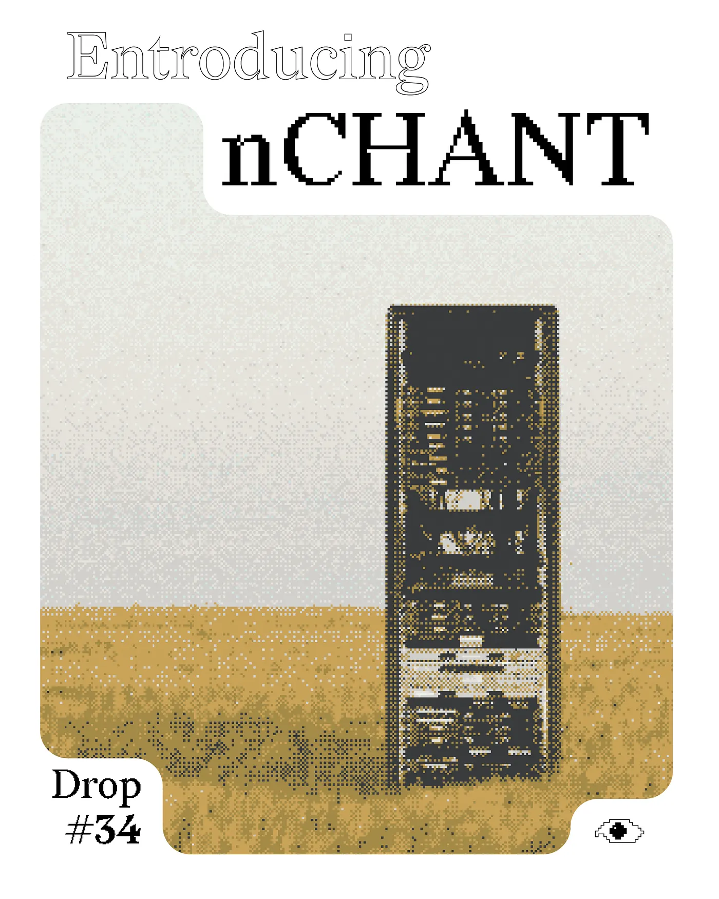
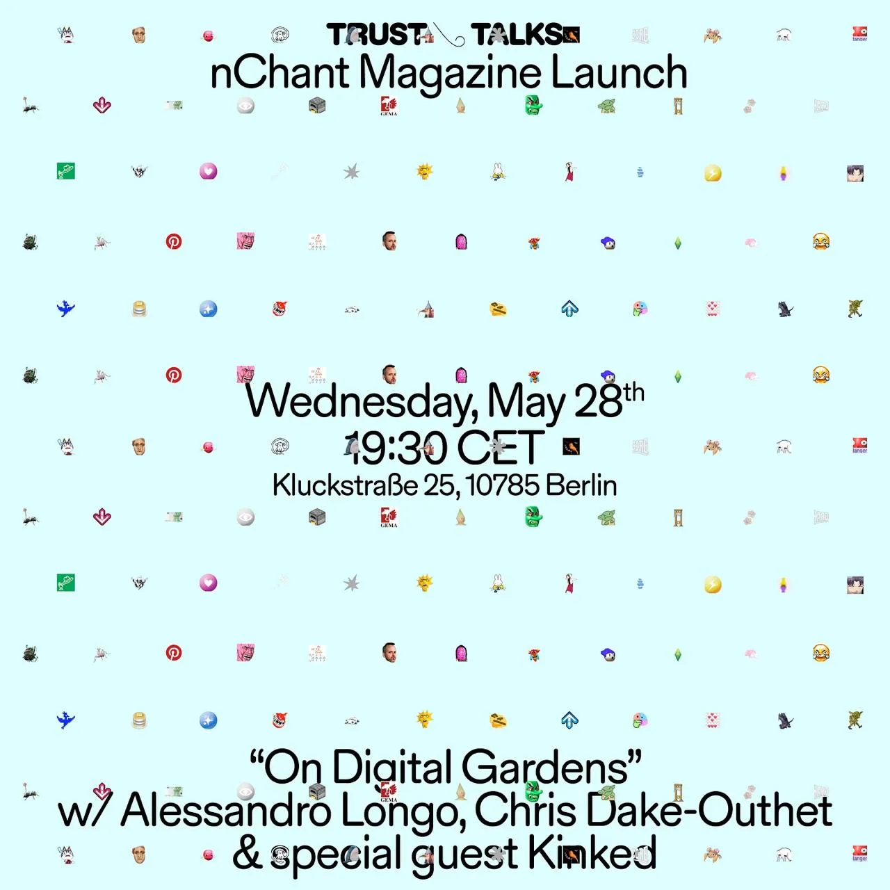

Drop #34 · May 23, 2025 · 5 min read
On REINCANTAMENTO's new monographic magazine
Hey everyone (▰˘◡˘▰)
Welcome back to DROPS, REINCANTAMENTO's newsletter.
This May, after several years of (mostly) online activities, REINCANTAMENTO materializes in a new form: a monographic magazine called nCHANT. In this 34th DROP, we're announcing this new publication and sharing details about our inaugural issue focused on digital gardens.

After several years of (mostly) online activities, REINCANTAMENTO takes physical form: a monographic magazine called nCHANT.
The name, nCHANT, comes from our brilliant Jeein's intuition and it carries multiple meanings. On one hand, it refers to the theme of enchantment, which forms the speculative and operational foundation of our collective's work. On the other hand, "chant" means a song, defined as:
noun. a repeated rhythmic phrase, typically one shouted or sung in unison by a crowd.
This definition captures exactly what we're creating: a space where multiple voices converge to produce something greater than their individual contributions. Each issue focuses on a single concept but builds a polyphonic perspective through various interventions.
The result aims to be deliberately hybrid and anti-disciplinary, somewhere between an art publication, an academic journal, and, a cultural magazine. Taking the gamble of taking independent research seriously while not losing a playful attitude and the joy of aesthetic exploration.
nCHANT is focused on the membrane between culture and technology, examining concepts, ideas, and meanings that structure our relationship with digital tools.
Like all REINCANTAMENTO work, we examine the cultural imaginaries that shape technology: the hopes, fears, and fantasies embedded in how digital systems are conceived and created.
Finally, the 'n' in nCHANT represents a variable numeral, indicating that each issue is part of an ongoing series. Just as in mathematics, where 'n' symbolizes any positive integer, nCHANT evolves with each edition while maintaining its identity across different themes. nCHANT #01 is merely the first in a (hopefully) long sequence.
nCHANT #01: On Digital Gardens
For our inaugural issue, we've chosen to focus on digital gardens - both as metaphor and practice - for reimagining our relationship with technology and online spaces.
As we've explored in previous work (particularly in our video essay "Harvesting The Net - A Tale of Digital Gardening"), the garden metaphor offers an intriguing alternative to the dominant models of platform capitalism. Where social media platforms operate through "feeds" and "streams" - aquatic metaphors indicating passive consumption models that transform attention into capital - gardens emphasize cultivation, care, and slow growth.
Digital gardens represent personal websites that privilege interconnected knowledge, iterative development, and the patient nurturing of ideas. They reject the chronological organization of content in favor of topological arrangements, creating webs of meaning rather than linear timelines.
The Trust Research Report and Beyond
We decided to situate the concept within a community of practice - our exploration begins at Trust in Berlin, a space that has been instrumental in shaping our research methods and community connections. The centerpiece of nCHANT #01 is a Research Report co-authored with Christopher Dake-Outhet, featuring detailed interviews with 20 members of the Trust community: artists, developers, designers, writers, and educators who are actively engaged in reimagining digital spaces.
The report examines first memories of internet experiences, archival practices, personal approaches to digital gardening, and visions for the future of these knowledge ecosystems. Rather than merely describing digital gardens as they exist, we've attempted to understand the desires and imaginaries that fuel their creation and maintenance.
Beyond the research report, nCHANT #01 includes contributions from REINCANTAMENTO’s network:
Simone Robutti takes on Notion, the popular productivity software used to create personal knowledge spaces. Are these conceivable as digital gardens? With his typical pragmatic wit, Simone leads us through a fractal exploration of this tool and its possibilities.
Federico Poni offers a bridge between analog and digital with a Python script to set up a self-hosted digital garden, complemented by a README document guiding readers through the process.
Marco Mattei and Elisa Carini extend their collaborative writing experiment “On Desire” into our pages. Starting with reflections on our "Harvesting The Net" video essay, they flow through a delicate dialogue on gardens as sites of desire.
Edin Barbi Cinti contributes a spatial analysis of gardens as part of a broader research project at Politecnico di Torino, offering a planner's perspective on how natural spaces impact human practices.
Together, these pieces form not just a collection of texts but a garden in themselves: a collection of approaches and thoughts that readers can explore, finding unexpected connection and allowing ideas to germinate in their minds.
The stunning graphic project and the creative direction are curated by Giorgio Craparo.
Where to find us

We'll be presenting nCHANT in Berlin on May 28th at Trust (read more about it here), with additional events planned throughout the summer in Europe, where you can grab a physical copy and join the conversation in person. But for those who can't wait or can't make it to our events, we've decided to release nCHANT through Metalabel: a platform for collective publishing that feels like a natural home for this project.
Why Metalabel? More than just another distribution channel, Metalabel feels as a genuine attempt to embrace new models for cultural production as well. Through Metalabel, we join a growing ecosystem of collectives rethinking how creative work can circulate outside traditional market structures and dominant social platform.
P.S. We’re already working on the second issue, which will be dedicated to the idea of Companionship in technology, from Tamagotchi to new AI tools. Get in touch if you want to propose something!
nCHANT is available at this link. If you lack the financial means but you’re interested in reading the publication, get in touch via email or Instagram.